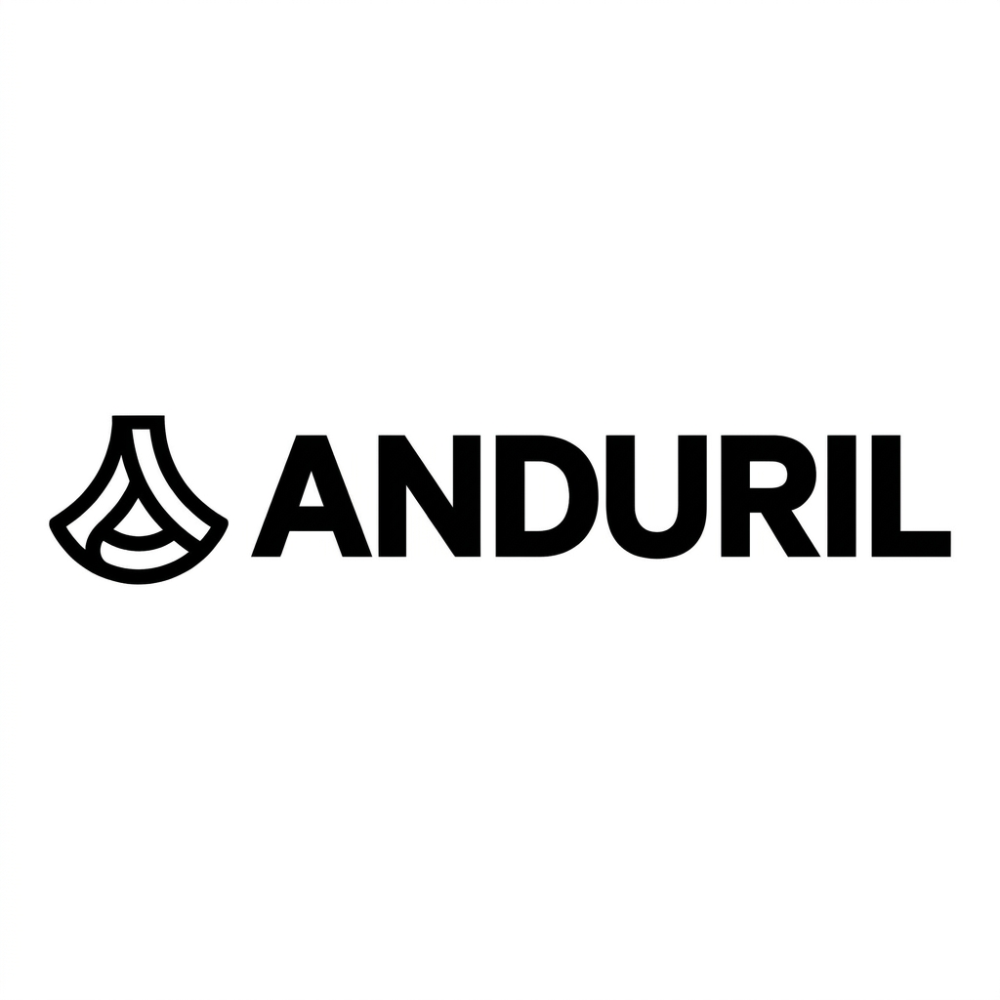

Private · Defense Tech · Autonomous Systems · AI

Founded in 2017 by Palmer Luckey, creator of Oculus VR. Anduril operates on a software-first, product-first philosophy rather than the requirements-driven approach of legacy defense contractors. Core competitive advantage is Lattice OS — an AI-powered operating system that integrates diverse sensors, drones, and weapons platforms into a unified command and control architecture.
Estimated $2.1 billion in revenue in 2025 (up 110% YoY), projecting $4.3 billion in 2026. Closed a $5 billion funding round in May 2026. Valuation surged from $30.5 billion in June 2025 to over $60 billion by early 2026. In March 2026, the U.S. Army awarded Anduril a 10-year enterprise contract with a ceiling of up to $20 billion. Won the U.S. Air Force Collaborative Combat Aircraft (CCA) program for autonomous fighter jets and secured a $642 million Marine Corps counter-drone contract. Arsenal-1 manufacturing facility in Ohio began producing the Fury autonomous fighter jet and Barracuda missile airframes in early 2026.
Key products: Lattice OS, Ghost UAV (VTOL ISR), Sentry towers, Roadrunner interceptors, Fury autonomous jet, Barracuda missile.
Research, analysis, and coverage of Anduril will be added here as it's published.
Subscribe on YouTube →